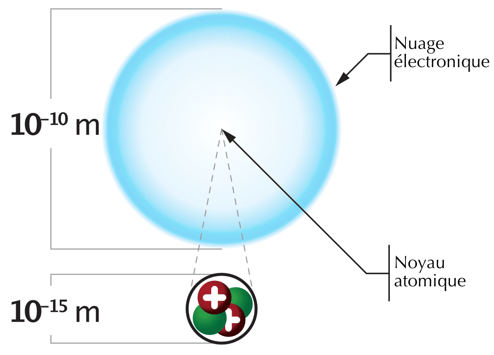
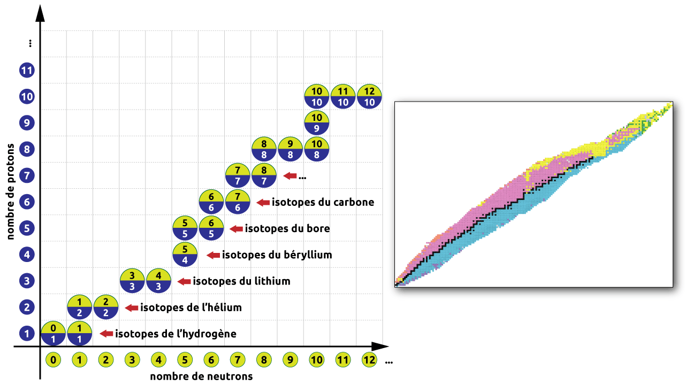
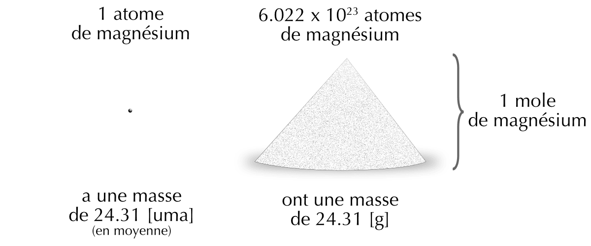

5 L’atome
- Décrire la structure de l’atome en termes de protons, de neutrons et d’électrons.
- Décrire les charges électriques et les masses relatives des protons, des neutrons et des électrons.
- Calculez la masse d’un atome à partir de sa composition subatomique.
- Utiliser les symboles chimiques ainsi que le numéro atomique et le nombre de masse pour exprimer la composition subatomique des isotopes.
- Définir l’unité de masse atomique.
- Décrire et calculer le défaut de masse.
- Calculez la masse d’un atome à partir de sa composition subatomique.
- Calculer la masse atomique d’un élément, en uma ou en g/mol, à partir des masses de ses isotopes et de leurs abondances naturelles.
- Convertir une quantité en moles et vice versa en utilisant le nombre d’Avogadro.
Atome
Un atome est la plus petite particule d’un élément qui conserve encore les propriétés de cet élément.
L’atome est formé d’un nuage d’électrons gravitant autour d’un petit noyau extrêmement dense. Le noyau atomique contient les protons qui sont chargés positivement et les neutrons qui ne sont pas chargés. Les électrons, qui sont chargés négativement, se déplacent autour du noyau sur des trajectoires complexes, qui forment le nuage électronique.
Un atome est principalement constitué de vide. Plus de 99% de la masse de l’atome se trouve dans le noyau.
Imaginons que l’on agrandisse un atome à la taille d’un stade. Le noyau se trouverait sur le rond central du terrain et il aurait la taille d’une tête d’épingle. Les électrons seraient alors à la place des spectateurs et chacun aurait la taille d’un grain de poussière !

5.1 Particules subatomiques
La matière est formée d’atomes et les atomes sont formés de particules subatomiques, les protons, les neutrons et les électrons.
Les mêmes particules subatomiques constituent tous les atomes. La seule chose qui varie d’un élément à l’autre est le nombre des particules subatomiques.
| particule | symbole | charge Coulomb | charge relative | masse kg | masse relative |
|---|---|---|---|---|---|
| proton | \(p^{+}\) | \(+1.602\cdot10^{-19}\) | +1 | \(1.672\cdot10^{-27}\) | 1 |
| neutron | \(n^{}\) | 0 | 0 | \(1.674\cdot10^{-27}\) | \(\approx\) 1 |
| électron | \(e^{-}\) | \(-1.602\cdot10^{-19}\) | -1 | \(9.109\cdot10^{-31}\) | \(\frac{1}{1836}\) |
Le proton porte une unité de charge positive, l’électron porte une unité de charge négative, et le neutron n’est pas chargé, il est électriquement neutre.
Un électron est 1836 fois plus léger qu’un proton, mais son influence est très grande car il porte une charge électrique équivalente à celle d’un proton.
L’atome est électriquement neutre. Comment un atome peut-il être neutre si il contient des protons chargés positivement et des électrons chargés négativement? La réponse est qu’il y a un nombre égal de protons et d’électrons de sorte que les charges positives et négatives s’annulent.
Répondez aux questions suivantes concernant les particules subatomiques.
- Quelles particules constituent le noyau de l’atome ? Où se trouvent les électrons ?
- Donnez la charge relative du proton, du neutron et de l’électron.
- Classez ces trois particules de la plus légère à la plus lourde.
- Un atome possède 17 protons. Combien d’électrons possède-t-il ? Justifiez.
- Le noyau contient les protons et les neutrons. Les électrons se déplacent autour du noyau et forment le nuage électronique.
- proton : +1 ; neutron : 0 ; électron : -1.
- électron (environ 1836 fois plus léger que le proton) \(<\) proton \(\approx\) neutron (le neutron est très légèrement plus lourd que le proton).
- 17 électrons. L’atome est électriquement neutre : il contient donc autant d’électrons (charges négatives) que de protons (charges positives).
Le diamètre d’un atome de carbone est de 1.54 angström (1 angström = \(10^{-10}\) m).
- Exprimer ce diamètre en picomètres, en nanomètres.
- Combien d’atomes de carbone pourraient être alignés côte à côte sur la largeur d’un trait de crayon de 0.20 mm de large ?
1.54 angström = \(1.54\cdot10^{-10}\) m
\[ 1.54\cdot10^{-10} \text{ m } \cdot \frac{ 10^{12}\text{ pm }}{1\text{ m }} = 1.54\cdot10^{2} \text{ pm } = 154 \text{ pm } \]
\[ 1.54\cdot10^{-10} \text{ m } \cdot \frac{ 10^{9}\text{ nm }}{1\text{ m }} = 1.54\cdot10^{-1} \text{ nm } = 0.154 \text{ nm } \]
\[ \frac{0.2\cdot10^{-3} \text{ m }}{1.54\cdot10^{-10} \text{ m/atome }} = 1.3\cdot10^6 \text{ atome } \]
- Calculez, en gramme, la masse d’une molécule d’eau, en considérant que chaque atome d’hydrogène possède 1 proton et 1 électron (mais aucun neutron) et que le noyau d’un atome d’oxygène comporte 8 protons, 8 neutrons et 8 électrons.
- Combien y a-t-il de molécules d’eau dans 1 mL d’eau (1 mL d’eau = 1 g d’eau) ?
\[ \begin{split} m_{H} &= 1 \cdot m_{p} + 1 \cdot m_{e}\\ &= 1.672\cdot10^{-27}\text{ kg } + 9.109\cdot10^{-31}\text{ kg }\\ &= 1.672\cdot10^{-27}\text{ kg }\\ m_{O} &= 8 \cdot m_{p} + 8 \cdot m_{n} + 8 \cdot m_{e}\\ &= 8 \cdot 1.672\cdot10^{-27}\text{ kg } + 8 \cdot 1.674\cdot10^{-27}\text{ kg } + 8 \cdot 9.109\cdot10^{-31}\text{ kg }\\ &= 2.678\cdot10^{-26}\text{ kg }\\ m_{H_{2}O} &= 2 \cdot m_{H} + 1 \cdot m_{O}\\ &= 2 \cdot 1.672\cdot10^{-27}\text{ kg } + 2.678\cdot10^{-26}\text{ kg }\\ &= 3.012\cdot10^{-26}\text{ kg } = 3.012\cdot10^{-23} \text{ g pour une molécule} \end{split} \]
1 mL d’eau = 1 g d’eau
\[ \begin{split} & \text{en utilisant la règle de trois : } \\ 1 \text{ molécule} &\rightarrow 3.012\cdot10^{-23} \text{ g }\\ n \text{ molécules} &\rightarrow 1 \text{ g }\\ n &= \frac{1}{3.012\cdot10^{-23}}\\ &= 3.320\cdot10^{22} \text{ molécules} \end{split} \qquad \begin{split} & \text{en utilisant une division simple : } \\ n &= \frac{1\text{ g }}{ 3.012\cdot10^{-23} \text{ g/molécule } } \\ &= 3.320\cdot10^{22} \text{ molécules} \end{split} \]
5.2 Les éléments
Élément
Un élément regroupe tous les atomes qui ont le même nombre de protons.
On connaît actuellement 118 éléments différents. Ils sont classés dans le tableau périodique des éléments. Ce sont les briques de base de tous les corps purs simples et les corps purs composés.
Quelle est la différence entre deux atomes de deux éléments différents? Leur nombre de protons.
- Tous les atomes contenant un proton dans leur noyau sont des atomes d’hydrogène.
- Tous les atomes contenant deux protons dans leur noyau sont des atomes d’hélium.
- Tous les atomes contenant trois protons dans leur noyau sont des atomes de lithium.
- …
5.2.1 Les symboles et les noms
Dans le but de simplifier l’écriture, on représente les éléments chimiques par des symboles qui sont une lettre majuscule correspondant à l’initiale du nom de l’élément. Dans de nombreux cas, l’initiale seule ne suffit pas. On utilise alors une seconde lettre minuscule.
| symbole | nom | origine |
|---|---|---|
| H | hydrogène | qui forme de l’eau |
| He | hélium | de Hélios, dieu grec du soleil |
| Li | lithium | de Lithos, pierre en grec |
| Be | béryllium | de béryl, un minerai |
| B | bore | de borax, un minerai |
| C | carbone | de Carbonis, charbon en grec |
| N | azote | qui n’entretient pas la vie |
| O | oxygène | qui forme des acides |
| F | fluor | de fluere, s’écouler en latin |
| Ne | néon | de Neos, nouveau en grec |
Lorsque l’on représente un atome d’un élément chimique, il est souvent pratique également d’indiquer son numéro atomique Z. On écrit ce nombre en index en bas et à gauche du symbole.
\[ _{1}H \quad _{17}Cl \quad _{82}Pb \]
5.3 Les isotopes
Isotopes
Atomes qui ont le même nombre de protons mais un nombre différent de neutrons.
Les noyaux de tous les atomes contiennent des protons et des neutrons. Les neutrons qui accompagnent les protons d’un noyau rendent celui-ci plus ou moins lourd sans changer la charge de l’ensemble de l’atome. Le rôle des neutrons est d’assurer la stabilité du noyau atomique.
Tous les atomes d’un même élément ont le même nombre de protons mais leur nombre de neutrons peut varier. En effet, pour un même élément, il existe des atomes qui possèdent un nombre variable de neutrons.
Il existe des tables qui indiquent la liste des isotopes naturels stables et radioactifs pour chaque élément.

Dans les deux tableaux suivants, indiquez quelles espèces sont des isotopes d’un même élément. De quels éléments s’agit-il?
| espèce | électrons | protons | neutrons |
|---|---|---|---|
| A | 6 | 6 | 6 |
| B | 5 | 5 | 6 |
| C | 6 | 6 | 7 |
| D | 7 | 7 | 7 |
| E | 6 | 6 | 8 |
| espèce | électrons | protons | neutrons |
|---|---|---|---|
| F | 7 | 7 | 6 |
| G | 6 | 6 | 6 |
| H | 9 | 9 | 7 |
| I | 7 | 7 | 7 |
| J | 7 | 7 | 8 |
tableau 1 : A, C, E - 6 protons = Carbone.
tableau 2 : F, I, J - 7 protons = Azote.
Dans la notation chimique, pour désigner un isotope, on indiquera le nombre de masse A de l’atome en exposant en haut et à gauche du symbol.
\[ \begin{split} _{Z}^{A}X \end{split} \qquad \begin{split} & \text{X : symbole de l'élément} \\ & \text{A : nombre de masse de l'atome $\rightarrow$ protons + neutrons} \\ & \text{Z : numéro atomique de l'élément $\rightarrow$ protons} \end{split} \]
\(_{6}^{12}C\) et \(_{6}^{13}C\) sont deux isotopes de l’élément carbone.On les nomme carbone 12 et carbone 13.
\(_{92}^{234}U\), \(_{92}^{235}U\) et \(_{92}^{238}U\) sont les isotopes naturels de l’élément uranium.
Complétez le tableau ci dessous pour chaque isotope considéré.
| symbole | A | protons | neutrons | électrons | nom de l’isotope |
|---|---|---|---|---|---|
| \(_{6}^{14}C\) | |||||
| \(_{3}^{7}Li\) | |||||
| \(_{9}^{19}F\) |
\(_{6}^{14}C\) : 14 / 6 / 8 / 6 / carbone 14
\(_{3}^{7}Li\) : 7 / 3 / 4 / 3 / lithium 7
\(_{9}^{19}F\) : 19 / 9 / 10 / 9 / fluor 19
5.4 L’unité de masse atomique
Les masses du protons et du neutrons sont d’environ \(1.672\cdot10^{-27}\) kg et la masse de l’électron est 1836 fois plus petite. Parce qu’il est peu pratique de travailler avec ces très petites masses exprimées en notation scientifique, les chimistes ont développé leur propre système de mesure de la masse d’un atome.
L’unité de masse atomique (uma) est une unité de mesure standard, utilisée pour mesurer la masse des atomes. Par convention, un atome de carbone 12, qui contient six protons et six neutrons a une masse de 12 uma exactement. Une unité de masse atomique est définie comme \(\frac{1}{12}\) de la masse cet atome.
\[ 1 \text{ uma} \simeq 1.660 \cdot 10^{-27} \text{ kg} \]
Calculez la masse du proton, du neutron et de l’électron en unité de masse atomique uma.
| particule | masse en kg | masse en uma |
|---|---|---|
| proton | \(1.672\cdot10^{-27}\) | |
| neutron | \(1.674\cdot10^{-27}\) | |
| électron | \(9.109\cdot10^{-31}\) |
Exemple pour le proton :
\[ \begin{split} 1~\text{ uma} &\rightarrow 1.661\cdot10^{-27}~\text{ kg} \\ x~\text{ uma} &\rightarrow 1.672\cdot10^{-27}~\text{ kg} \\ x &= \frac{1.672\cdot10^{-27}}{1.661\cdot10^{-27}} = 1.007 \end{split} \]
- proton : 1.007
- neutron : 1.008
- électron : \(5.484\cdot10^{-4}\)
5.4.1 Le défaut de masse
On sait que des charges électriques semblables se repoussent entre-elles. Comment se fait-il que le noyau de l’atome, composé entre autres de protons chargé positivement, n’éclate-t-il pas sous l’effet des forces des répulsions électriques ? Ce sont les neutrons qui maintiennent la cohésion du noyau en exerçant une force d’attraction qui permet de lier fortement les nucléons (protons et neutrons) entre eux. Cette force est appelée force nucléaire forte et assure la stabilité du noyau atomique.
En mesurant la masse d’un noyau stable et en calculant la masse des nucléons qui forment ce noyau, on remarque que ces masses sont différentes. La masse du noyau est plus petite que la somme des masses des nucléons. C’est ce qu’on appelle le défaut de masse. Cette différence de masse est transformée en énergie de cohésion pour maintenir les nucléons ensemble. Maintenir un noyau stable n’est donc pas “gratuit”.
Le défaut de masse est défini de la manière suivante :
\[ \Delta m = m_{\text{nucléons}} - m_{\text{noyau}} \]
avec :
- \(\Delta m\) : défaut de masse en uma
- \(m_{\text{nucléons}}\) : somme des masses des nucléons (\(m_p + m_n\)) en uma
- \(m_{\text{noyau}}\) : masse mesurée du noyau en uma
Depuis le début du 20e siècle, nous savons que, sous certaines conditions, une masse \(m\) peut se transformer en énergie \(E\), et vice versa. C’est le célèbre \(E = m \cdot c^2\) d’Albert Einstein.
\[ E = m \cdot c^2 \qquad \text{ou} \qquad \Delta E = \Delta m \cdot c^2 \qquad \text{donc} \qquad \Delta m = \frac{\Delta E}{c^2} \]
avec :
- \(\Delta E\) : Énergie de cohésion en J
- \(\Delta m\) : défaut de masse en kg
- \(c\) : vitesse de la lumière en m/s (\(299\ 792\ 458\) m/s \(\approx 3 \cdot 10^8\) m/s )
- Quelle est la masse en kg d’un noyau d’hélium-4 ?
- La masse mesurée d’un noyau d’hélium-4 est de 4.002602 uma. Calculez la différence entre la masse mesurée et la masse obtenue par la somme des masses des particules subatomiques.
- Si il existe une différence, êtes-vous en mesure de l’expliquer ?
\[ \begin{split} m_{\text{calculée}} &= 2 \cdot m_{p+} + 2 \cdot m_{n} \\ &= 2 \cdot 1.672 \cdot 10^{-27} \:\text{ kg} + 2 \cdot 1.674 \cdot 10^{-27} \:\text{ kg} \\ &= 6.692 \cdot 10^{-27} \:\text{ kg} \end{split} \]
\[ \begin{split} 1\:\text{ uma} &\rightarrow 1.660 \cdot 10^{-27} \:\text{ kg} \\ 4.002602\:\text{ uma} &\rightarrow x \:\text{ kg} \end{split} \qquad \begin{split} m_{\text{mesurée}} &= 4.002602\:\text{ uma} \cdot 1.660 \cdot 10^{-27} \:\text{ kg/uma} \\ &= 6.644 \cdot 10^{-27} \:\text{ kg} \end{split} \] \[ \begin{split} m_{\text{calculée}} - m_{\text{mesurée}} &= 6.692 \cdot 10^{-27} \:\text{ kg} - 6.644 \cdot 10^{-27} \:\text{ kg} \\ &= 0.048 \cdot 10^{-27} \:\text{ kg} \end{split} \]
La masse du noyau est inférieure à la somme des masses de chacun des protons et neutrons qui le composent. Une partie de la masse est donc transformée en énergie qui sert à la cohésion des particules du noyau.
On peut faire le lien avec le célèbre \(E=m \cdot c^{2}\) exprimé par Albert Einstein (équivalence entre masse énergie).
5.5 La masse atomique
Masse atomique
La masse atomique d’un élément est la moyenne des masses de ses isotopes pondérée par leur abondance relative.
La plupart des éléments sont présents dans la nature sous forme d’un mélange d’isotopes. On appelle abondance isotopique le pourcentage de chacun des isotopes présents dans l’élément considéré.
On peut déterminer la masse atomique d’un élément, en additionnant les masses de ses isotopes multipliées par leurs abondances relatives.
Calculer la masse atomique du chlore à l’aide des données suivantes :
| isotope | masse atomique | abondance |
|---|---|---|
| \(_{17}^{35}Cl\) | 34.969 uma | 75.77% |
| \(_{17}^{37}Cl\) | 36.966 uma | 24.23% |
\[ \begin{split} MA_{Cl} &= MA_{Cl^{35}} \cdot Abd_{Cl^{35}} + MA_{Cl^{37}} \cdot Abd_{Cl^{37}}\\ &= 34.969~\text{ uma} \cdot 0.7577 + 36.966~\text{ uma} \cdot 0.2423\\ &= 35.45 \text{ uma} \end{split} \]
5.6 La mole et le nombre d’Avogadro
Même les plus petits échantillons que nous traitons dans un laboratoire contiennent de gigantesques quantités d’atomes. Ne pouvant pas prendre les atomes, ou molécules, un par un avec des pincettes, les chimistes ont donc mis au point un système d’unité de comptage.
Dans la vie quotidienne, nous sommes familiers avec des unités de comptage comme la dizaine, la douzaine, la vingtaine, etc. En chimie, l’unité de comptage est la mole.
La mole
Une mole contient exactement \(6.02214076\cdot10^{23}\) entités élémentaires.
Des techniques telles que la spectrométrie de masse, qui permettent de compter très précisément les atomes, ont été utilisées pour déterminer ce nombre. Ce nombre, noté \(N_A\), est appelé nombre d’Avogadro et dans le cadre de ce cours nous allons arrondir ce nombre à \(6.022\:\cdot\:10^{23}\).
| unité | nombre d’entités | exemple |
|---|---|---|
| paire | 2 entités | une paire de chaussures |
| dizaine | 10 entités | une dizaine de pommes |
| douzaine | 12 entités | une douzaine d’oranges |
| vingtaine | 20 entités | une vingtaine de personnes |
| mole | \(6.022\cdot10^{23}\) entités | une mole d’atomes de potassium |
Une mole d’atomes, une mole de molécules, ou une mole de quoi que ce soit contiennent toutes \(6.022\cdot10^{23}\) objets.
De par la définition de l’unité de masse atomique, un seul atome de carbone 12 a une masse de 12 uma. Calculez la masse en grammes d’une mole d’atomes de carbone 12.
\[ \begin{split} \text{1 atome de } ^{12}C &\\ 1 \text{ uma} &\longrightarrow 1.661\cdot10^{-24} \text{ g}\\ 12 \text{ uma} &\longrightarrow m \text{ g} \end{split} \qquad\qquad \begin{split} m &= \dfrac{12 \text{ uma} \cdot 1.661 \cdot 10^{-24} \text{ g}}{1 \text{ uma}}\\ &= 1.9932\cdot 10^{-23} \text{ g} \end{split} \]
\[ \begin{split} \text{1 mole d'atomes de }^{12}C &\\ \text{1 atome de }^{12}C &\longrightarrow 1.9932\cdot 10^{-23} \text{ g}\\ \quad 6.022\cdot 10^{23} \text{ atome} &\longrightarrow M \text{ g}\\ \end{split} \qquad\qquad \begin{split} M &= \dfrac{6.022\cdot 10^{23} \cdot 1.9932\cdot 10^{-23} \text{ g}}{1 \text{ atome}}\\ &= 12 \text{ g} \end{split} \]
Une mole d’atomes de carbone 12 a une masse de 12 g.
Un seul atome d’oxygène 16 a une masse de 15.9949 uma. Calculez la masse en grammes d’une mole d’atomes d’oxygène 16.
\[ \begin{split} \text{1 atome de }^{16}O &\\ 1 \text{ uma} &\longrightarrow 1.661\cdot10^{-24} \text{ g}\\ 16 \text{ uma} &\longrightarrow m \text{ g}\\ \end{split} \qquad\qquad \begin{split} m &= \dfrac{16 \text{ uma} \cdot 1.661 \cdot 10^{-24} \text{ g}}{1 \text{ uma}}\\ &= 2.657\cdot 10^{-23} \text{ g} \end{split} \]
\[ \begin{split} \text{1 mole d'atomes de }^{16}O &\\ \text{1 atome de } ^{16}O &\longrightarrow 2.657\cdot 10^{-23} \text{ g}\\ 6.022\cdot 10^{23} \text{ atome} &\longrightarrow M \text{ g}\\ \end{split} \qquad\qquad \begin{split} M &= \dfrac{6.022\cdot 10^{23} \cdot 2.657\cdot 10^{-23} \text{ g}}{1 \text{ atome}}\\ &= 16 \text{ g} \end{split} \]
Une mole d’atomes d’oxygène 16 a une masse de 16 g.
Sur la base des résultats des deux exercices ci-dessus, identifiez la relation entre les valeurs numériques de la masse d’un atome en uma et la masse d’une mole d’atomes en g/mol.
La masse en grammes par mole d’une substance est numériquement égale à son poids en unités de masse atomique.
\[ \underbrace{\{masse\;atomique\}}_\text{uma}\;=\;\underbrace{\{masse\;molaire\}}_\text{g/mol} \]
5.7 La masse molaire atomique

Masse molaire atomique
La masse molaire atomique d’un élément est la masse en grammes d’une mole d’atomes de l’élément.
La définition de la masse molaire nous permet d’exprimer la relation suivante:
\[ \begin{split} \text{M} = \frac{\text{m}}{\text{n}} \end{split} \qquad \begin{split} &\text{m : masse de substance en g}\\ &\text{n : quantité de matière en mol}\\ &\text{M : masse molaire en g/mol} \end{split} \]
\[ M = \frac{m}{n} \qquad \text{ ou } \qquad n = \frac{m}{M} \qquad \text{ ou } \qquad m = n \cdot M \]
Complétez le tableau ci dessous, indiquant la masse molaire du composé en g/mol et le nombre de moles contenues dans 1g de cet élément.
| substance | masse molaire en g/mol | moles contenues dans 1g |
|---|---|---|
| Fe | ||
| Pb | ||
| Mg |
Fe - 55.85 g/mol - 1g / 55.85g/mol = 0.018 mol
Pb - 207.2 g/mol - 1g / 207.2g/mol = 0.005 mol
Mg - 24.31 g/mol - 1g / 24.31g/mol = 0.041 mol
5.8 Résumé
- L’atome est constitué d’un noyau (protons et neutrons) autour duquel gravitent les électrons ; il est essentiellement constitué de vide et plus de 99 % de sa masse est concentrée dans le noyau.
- Le proton porte une charge relative +1, l’électron une charge -1 et le neutron est neutre. Proton et neutron ont une masse voisine ; l’électron est environ 1836 fois plus léger.
- Un atome est électriquement neutre : il compte autant d’électrons que de protons.
- Un élément regroupe tous les atomes ayant le même nombre de protons, appelé numéro atomique \(Z\).
- Le nombre de masse \(A\) est le nombre de nucléons (protons + neutrons). La notation \(_{Z}^{A}X\) résume la composition d’un atome.
- Les isotopes d’un élément ont le même \(Z\) mais un nombre de neutrons (donc un \(A\)) différent.
- L’unité de masse atomique (uma) vaut \(\frac{1}{12}\) de la masse d’un atome de carbone 12, soit environ \(1.660\cdot10^{-27}\) kg.
- La masse d’un noyau est inférieure à la somme des masses de ses nucléons : c’est le défaut de masse \(\Delta m\), converti en énergie de cohésion selon \(\Delta E = \Delta m \cdot c^{2}\).
- La masse atomique d’un élément est la moyenne des masses de ses isotopes, pondérée par leurs abondances naturelles.
- Une mole contient \(N_A = 6.022\cdot10^{23}\) entités (nombre d’Avogadro).
- La masse molaire \(M\) (en g/mol) est la masse d’une mole d’atomes ; elle est numériquement égale à la masse atomique en uma. On relie masse et quantité de matière par \(n = \dfrac{m}{M}\).
5.9 Exercices supplémentaires
Combien de protons, de neutrons et d’électrons sont contenus dans un atome de:
- \(^{197}\text{Au}\)
- strontium 90
- Z de l’or = 79
Un atome de \(^{197}Au\) a 79 protons, 79 électrons, et 197-79 = 118 neutrons.
- Z du strontium = 38
L’isotope strontium 90 a 38 protons, 38 électrons et 90-38 = 52 neutrons.
Le magnésium a trois isotopes dont les nombres de masse sont 24, 25 et 26.
- Donnez le symbole chimique complet (exposant et indice) pour chaque isotope.
- Combien de neutrons sont contenus dans un atome de chaque isotope ?
- \(_{12}^{24}Mg\), \(_{12}^{25}Mg\) et \(_{12}^{26}Mg\)
- 12 neutrons, 13 neutrons et 14 neutrons
Complétez le tableau suivant pour retrouver l’isotope considéré à chaque ligne.
| symbole | A | protons | neutrons | nom de l’isotope |
|---|---|---|---|---|
| 7 | 6 | |||
| 16 | 8 | |||
| 17 | 9 | |||
| 15 | 8 |
\(_{7}^{13}N\) | 13 | 7 | 6 | azote 13
\(_{8}^{16}O\) | 16 | 8 | 8 | oxygène 16
\(_{8}^{17}O\) | 17 | 8 | 9 | oxygène 17
\(_{7}^{15}N\) | 15 | 7 | 8 | azote 15
Donnez le symbole chimique complet de l’atome dont le nombre de masse est de 112 et le numéro atomique égal à 48.
Donnez le nombre de chacune des particules qui le composent.
\(_{48}^{112}Cd\)
48 protons, 64 neutrons et 48 électrons
Soit un atome de sodium 23. Qu’obtiendrait-on …
- si on pouvait lui ajouter un proton ?
- si on pouvait lui ajouter un neutron ?
- du magnésium 24.
- un autre isotope du sodium
Chacun des symboles chimiques ci-dessous représente un élément différent. Identifiez l’élément représenté et donnez le nombre de protons, de neutrons et d’électrons de chacun:
- \(^{74}_{33}X\)
- \(^{127}_{53}X\)
- \(^{152}_{63}X\)
- \(^{209}_{83}X\)
- \(^{74}_{33}As\) : 33 \(p^+\), 41 \(n\), 33 \(e^-\)
- \(^{127}_{53}I\) : 53 \(p^+\), 74 \(n\), 53 \(e^-\)
- \(^{152}_{63}Eu\) : 63 \(p^+\), 89 \(n\), 63 \(e^-\)
- \(^{209}_{83}Bi\) : 83 \(p^+\), 126 \(n\), 83 \(e^-\)
Quelle serait la masse atomique d’un l’élément si cet élément était composé de trois isotopes avec les abondances relatives suivantes?
- 30.00 % à 37.00 uma
- 50.00 % à 38.00 uma
- 20.00 % à 40.00 uma
\[ \begin{split} m_a & = 0.3 \cdot 37.00 \text{ uma} + 0.5 \cdot 38.00 \text{ uma} + 0.2 \cdot 40.00 \text{ uma}\\ &= 38.1 \text{ uma} \end{split} \]
Vous portez à votre doigt un anneau d’or pur qui pèse 31.6 g.
- Combien de moles d’atomes d’or sont contenues dans cet anneau?
- Combien d’atomes d’or sont contenus dans cet anneau?
- Combien de protons sont contenus dans cet anneau?
\[ \begin{split} 1 \text{ mol} \text{ d 'Au } &\longrightarrow 196.97 \text{ g}\\ n \text{ mol} \text{ d 'Au } &\longrightarrow 31.6 \text{ g}\\ n &= \dfrac{31.6 \text{ g} \cdot 1 \text{ mol}}{196.97 \text{ g}} = 0.16 \text{ mol} \end{split} \]
31.6 g d’or contiennent 0.16 mol d’atomes d’or.
\[ \begin{split} 1 \text{ mol} \text{ d'Au } &\longrightarrow 6.022\cdot 10^{23} \text{ atome} \text{ d'Au}\\ 0.16 \text{ mol} \text{ d'Au } &\longrightarrow N_a \text{ atome} \text{ d'Au}\\ N_a = \dfrac{0.16 \text{ mol} \cdot 6.022\cdot 10^{23} \text{ atome}}{1 \text{ mol}} &= 9.66\cdot 10^{22} \text{ atome} \end{split} \]
31.6 g d’or contiennent \(9.66\cdot 10^{22}\) atomes d’or.
\[ \begin{split} 1 \text{ atome} \text{ d'Au } &\longrightarrow 79 \text{ proton}\\ 9.66\cdot 10^{22} \text{ atome} \text{ d'Au } &\longrightarrow N_{p} \text{ proton}\\ N_p = \dfrac{9.66\cdot 10^{22} \text{ atome} \cdot 79 \text{ proton}}{1 \text{ atome}} &= 7.63\cdot 10^{24} \text{ proton}\\ \end{split} \]
31.6 g d’or contiennent \(7.63\cdot 10^{24}\) protons.
Calculer le nombre d’atomes de magnésium contenus dans 35.2 g de magnésium.
Quelle est la masse de 2.2 \(\cdot 10^{23}\) atomes de Pt?
Combien de grammes de calcium (Ca) faut-il pour obtenir 3.40 moles de calcium?
\[ \begin{split} n &= \dfrac{m}{M} = \dfrac{35.2~\text{ g}}{24.31~\text{ g/mol}} = 1.45~\text{ mol} \\ N &= n \cdot N_{A} = 1.45~\text{ mol} \cdot 6.022\cdot10^{23} = 8.73\cdot10^{23}~\text{ atomes} \end{split} \]
\[ \begin{split} n &= \dfrac{N}{N_{A}} = \dfrac{2.2\cdot10^{23}}{6.022\cdot10^{23}} = 0.37~\text{ mol} \\ m &= n \cdot M = 0.37\text{ mol} \cdot 195.08\text{ g/mol} = 72\text{ g} \end{split} \]
\[ \begin{split} m &= n \cdot M = 3.4\text{ mol} \cdot 40.08\text{ g/mol} = 136\text{ g} \end{split} \]
Combien de mole d’atomes de carbone contiennent 6 g de carbone 12?
Combien d’atomes sont contenus dans 97.6 g de platine?
Combien d’atomes contient un échantillon de chrome ayant une masse de 13 g?
Combien de moles d’argent représentent 9.02 \(\cdot 10^{23}\) atomes d’argent?
\[ \begin{split} 1 \text{ mol de C } &\longrightarrow 12 \text{ g}\\ n \text{ mol de C } &\longrightarrow 6 \text{ g}\\ n = \dfrac{6 \text{ g} \cdot 1 \text{ mol}}{12 \text{ g}} &= 0.5 \text{ mol} \end{split} \qquad \begin{split} n = \dfrac{m}{M} = \dfrac{6\text{ g}}{12\text{ g/mol}} = 0.5 \text{ mol} \end{split} \]
\[ \begin{split} 1 \text{ mol de Pt } &\longrightarrow 195 \text{ g}\\ n \text{ mol de Pt } &\longrightarrow 97.6 \text{ g}\\ n = \dfrac{97.6 \text{ g} \cdot 1 \text{ mol}}{195 \text{ g}} &= 0.5 \text{ mol} \end{split} \qquad \begin{split} n = \dfrac{m}{M} = \dfrac{97.6\text{ g}}{195\text{ g/mol}} = 0.5 \text{ mol} \end{split} \]
\[ \begin{split} 1 \text{ mol de Pt } &\longrightarrow 6.022\cdot10^{23} \text{ atome}\\ 0.5 \text{ mol de Pt } &\longrightarrow n \text{ atome}\\ n = \dfrac{0.5 \text{ mol} \cdot 6.022\cdot10^{23} \text{ atome}}{1 \text{ mol}} &= 3.011\cdot10^{23} \text{ atome} \end{split} \]
- \[ \begin{split} 1 \text{ mol de Cr } &\longrightarrow 52 \text{ g}\\ n \text{ mol de Cr } &\longrightarrow 13 \text{ g}\\ n = \dfrac{13 \text{ g} \cdot 1 \text{ mol}}{52 \text{ g}} &= 0.25 \text{ mol} \end{split} \qquad \begin{split} n = \dfrac{m}{M} = \dfrac{13\text{ g}}{52\text{ g/mol}} &= 0.25 \text{ mol} \end{split} \]
\[ \begin{split} 1 \text{ mol de Cr } &\longrightarrow 6.022\cdot10^{23} \text{ atome}\\ 0.25 \text{ mol de Cr } &\longrightarrow n \text{ atome}\\ n = \dfrac{0.25 \text{ mol} \cdot 6.022\cdot10^{23} \text{ atome}}{1 \text{ mol}} &= 1.51\cdot10^{23} \text{ atome} \end{split} \]
- \[ \begin{split} 1 \text{ mol de Ag } &\longrightarrow 6.022\cdot10^{23} \text{ atome}\\ n \text{ mol de Ag } &\longrightarrow 9.02\cdot10^{23} \text{ atome}\\ n &= \dfrac{9.02\cdot10^{23} \text{ atome} \cdot 1\text{ mol}}{6.022\cdot10^{23} \text{ atome}} = 1.51 \text{ mol} \end{split} \]
Le bore naturel est composé de deux isotopes : le bore 10 (masse 10.013 uma) et le bore 11 (masse 11.009 uma). La masse atomique du bore vaut 10.81 uma.
- Déterminez l’abondance naturelle (en %) de chacun des deux isotopes.
- Donnez la composition (protons, neutrons, électrons) d’un atome de bore 11.
- Combien d’atomes de bore contient un échantillon de 5.00 g de bore ?
- Soit \(x\) l’abondance du bore 10 (exprimée en fraction) ; celle du bore 11 est \(1-x\). \[ 10.013 \cdot x + 11.009 \cdot (1-x) = 10.81 \] \[ 11.009 - 0.996 \cdot x = 10.81 \quad\Rightarrow\quad x = \frac{0.199}{0.996} = 0.200 \] Le bore contient environ 20.0 % de bore 10 et 80.0 % de bore 11.
- Le bore a \(Z = 5\). Le bore 11 possède donc 5 protons, \(11 - 5 = 6\) neutrons et 5 électrons.
- \[ n = \frac{m}{M} = \frac{5.00}{10.81} = 0.4625 \text{ mol} \] \[ N = n \cdot N_A = 0.4625 \cdot 6.022\cdot10^{23} = 2.79\cdot10^{23} \text{ atomes} \]
Le noyau de lithium 7 (\(_{3}^{7}Li\)) a une masse mesurée de 7.016 uma. On rappelle : \(m_p = 1.672\cdot10^{-27}\) kg, \(m_n = 1.674\cdot10^{-27}\) kg, 1 uma \(= 1.660\cdot10^{-27}\) kg et \(c = 3\cdot10^{8}\) m/s.
- Calculez la masse totale des nucléons du noyau (en kg).
- Exprimez la masse mesurée du noyau en kg, puis déterminez le défaut de masse \(\Delta m\).
- Calculez l’énergie de cohésion \(\Delta E\) du noyau (en J).
- Le lithium 7 possède 3 protons et \(7 - 3 = 4\) neutrons. \[ m_{\text{nucléons}} = 3 \cdot 1.672\cdot10^{-27} + 4 \cdot 1.674\cdot10^{-27} = 1.1712\cdot10^{-26} \text{ kg} \]
- \[ m_{\text{noyau}} = 7.016 \cdot 1.660\cdot10^{-27} = 1.1647\cdot10^{-26} \text{ kg} \] \[ \Delta m = m_{\text{nucléons}} - m_{\text{noyau}} = 1.1712\cdot10^{-26} - 1.1647\cdot10^{-26} = 6.5\cdot10^{-29} \text{ kg} \]
- \[ \Delta E = \Delta m \cdot c^{2} = 6.5\cdot10^{-29} \cdot (3\cdot10^{8})^{2} = 5.9\cdot10^{-12} \text{ J} \]
L’aluminium ne possède qu’un seul isotope stable, \(_{13}^{27}Al\). On considère un échantillon de 2.00 g d’aluminium (M = 26.982 g/mol).
- Combien de moles d’atomes d’aluminium contient l’échantillon ?
- Combien d’atomes d’aluminium contient-il ?
- Combien de protons, de neutrons et d’électrons l’échantillon contient-il au total ?
- \[ n = \frac{m}{M} = \frac{2.00}{26.982} = 0.0741 \text{ mol} \]
- \[ N = n \cdot N_A = 0.0741 \cdot 6.022\cdot10^{23} = 4.46\cdot10^{22} \text{ atomes} \]
- Un atome de \(_{13}^{27}Al\) contient 13 protons, \(27 - 13 = 14\) neutrons et 13 électrons. Pour l’échantillon entier : \[ \text{protons} = 13 \cdot 4.46\cdot10^{22} = 5.80\cdot10^{23} \] \[ \text{neutrons} = 14 \cdot 4.46\cdot10^{22} = 6.25\cdot10^{23} \] \[ \text{électrons} = 13 \cdot 4.46\cdot10^{22} = 5.80\cdot10^{23} \]
On souhaite estimer la masse d’un atome de fer 56 (\(_{26}^{56}Fe\)). Données : \(m_p = 1.672\cdot10^{-27}\) kg, \(m_n = 1.674\cdot10^{-27}\) kg, \(m_e = 9.109\cdot10^{-31}\) kg, 1 uma \(= 1.660\cdot10^{-27}\) kg.
- Calculez la masse d’un atome de fer 56 en additionnant les masses de toutes ses particules subatomiques (en kg).
- Convertissez cette masse en uma.
- La masse atomique du fer donnée par le tableau périodique est de 55.845 uma. Comment expliquer que la valeur calculée soit légèrement supérieure ?
- Le fer 56 possède 26 protons, \(56 - 26 = 30\) neutrons et 26 électrons. \[ m = 26 \cdot 1.672\cdot10^{-27} + 30 \cdot 1.674\cdot10^{-27} + 26 \cdot 9.109\cdot10^{-31} \] \[ m = 4.347\cdot10^{-26} + 5.022\cdot10^{-26} + 2.368\cdot10^{-29} = 9.372\cdot10^{-26} \text{ kg} \]
- \[ m = \frac{9.372\cdot10^{-26}}{1.660\cdot10^{-27}} = 56.5 \text{ uma} \]
- La valeur calculée additionne les masses des particules libres. Dans le noyau, une partie de la masse est convertie en énergie de cohésion : c’est le défaut de masse. La masse réelle de l’atome est donc plus petite que la somme des masses de ses particules. De plus, la masse atomique du tableau (55.845 uma) est une moyenne pondérée sur tous les isotopes du fer, pas uniquement le fer 56.